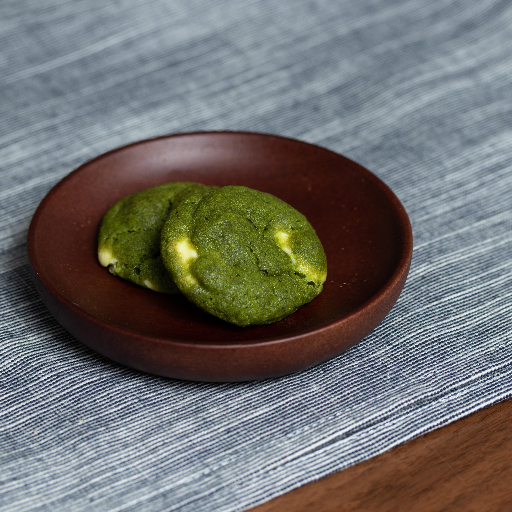

Matcha and While Chocolate Cookies

Description
Deliciously soft and comforting matcha green tea cookies with white chocolate chips that satisfy with every bite. This easy matcha green tea cookie recipe is just what you need for a tasty snack break or as a holiday treat!
Ingredients
- ⅔ cup superfine sugar
- ½ cup unsalted butter, softened
- ½ cup packed brown sugar
- 1 ½ cups all-purpose flour
- 2 tablespoons all-purpose flour
- 10 tablespoons green tea powder (matcha)
- 1 teaspoon baking soda
- ½ teaspoon baking powder
- ½ teaspoon salt
- 1 large egg
- 1 teaspoon vanilla extract
- ⅓ cup white chocolate chips
Steps
- Preheat the oven to 320 degrees F (160 degrees C). Line a baking sheet with parchment paper.
- Combine superfine sugar, butter, and brown sugar in the bowl of a stand mixer fitted with the paddle attachment; beat on medium speed, then increase speed and continue to mix until smooth and creamy.
- Mix in 1 1/2 cups plus 2 tablespoons flour, matcha, baking soda, baking powder, and salt until combined. Mix in egg and vanilla, gradually lowering the speed setting until everything is evenly incorporated and you get a dough-like texture. Add chocolate chips and mix in evenly.
- Drop spoonfuls of dough 2 inches apart onto the prepared baking sheet.
- Bake in the preheated oven until edges are golden, about 10 minutes. Cool on the baking sheet briefly before removing to a wire rack to cool, 5 to 10 minutes more.